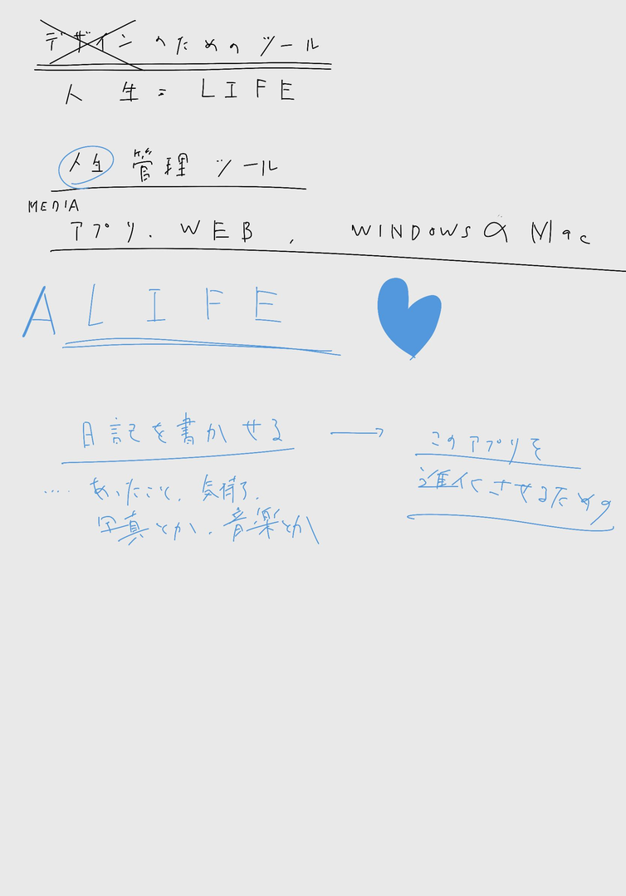

A LIFE
人生についてのBlog
とりあえず、何も考えずに、手を動かすところから
このブログには、決まりきったグリッドも、デザイン感も持ち込んでいない。そういうとこから離れて、ただ文字を書きたいという欲求をかなえるために、Figmaを動かしてみようというものになれ場いいなと思っている。
そして、いつか、このブログが、データとなって私がやりたいことをかなえるための叶えたときのメモ帳になればいいなと思っている。
目標
私は、自分の人生を豊かにしたい。
そのためには、今よりもっと、過去を超えてという欲求が常にある。
それは傍から見たら、愚かな人間の欲の塊のように見えるかもしれないがもうそういう人間なのだからしょうがないじゃないかと素直に開き直ってしまっていもいる。
だから、私は、それをかなえるために、いろいろ考えてみようと思う。ゆっくりと。
まずは、私のためのAIを作ってみようと思う。習慣を作って、人生を豊かにするために。
とりあえず、明日の朝を起きるために。
